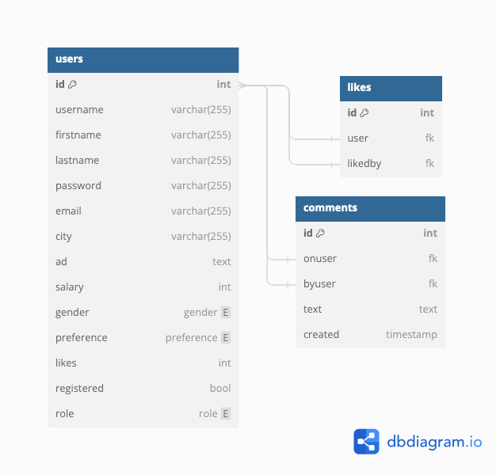

| Roll | Användarnamn | Lösenord |
|---|---|---|
| Administrator | administrator | Abcd1234 |
| Moderator | moderator | Abcd1234 |
Jag deltog inte i några lektioner men min kunskaper i PHP var tillräckliga och det jag har lärt mig i databas kursen på Högskolan På Åland hjälpte till med alla sql frågor. Ifall jag hade några problem så kollade jag upp det på internet och det var inga problem att hitta hjälp. Vissa koncept behövde jag dock kolla upp lite noggrannare för att försåt hur jag skulle göra på bästa sätt.
Jag gick igenom delstegen och implementerade varje krav de flesta kraven, lazy loadingen och ett mer advancerat chat system implementerade jag inte. Jag började först med att skapa ett databas diagram i dbdiagram.io. Det gick bra att komma in i flödet av koden igen tack vara kommentarerna jag hade skrivit på de ställen jag behövde modifiera den befintliga koden så som login och registrerings sidan.
Jag blev lite osäker på hur jag skulle göra med gilla funktionen med databasen. För jag vill ju kunna få ut hur många gillningar en användare har fått, men jag hade inte riktigt lust att skriva en query med en join på det stället. Jag hittade möjligheten att man kan ha triggers i databasen. Jag skapade då 2 triggers, en som plussar på gillningarna värdet i users tabellen när en ny rad skapas i likes tabellen och en som sedan tar minus när en rad tas bort. Jag tycker att det var en bra lösning på problemet, som jag inte hade tänkt på innan. Det blir mindre kod i PHP och det blir mer effektivt att hämta gillningarna från databasen. Jag vet dock inte om ni gick igenom triggers i föreläsningarna så jag kanske bara gjorde något som egentligen är ganska vanligt. Fick inte reda på triggers i föreläsningarna på Högskolan På Åland iallfall.
Allting gick rätt bra, ingen del var speciellt svår och jag kunde lösa allt innom en rimlig tid. Jag tycker att kraven är lite röriga och skulle behöva bli bättre strukturerade och lite mer tydliga och vad som skal fortsätta att vara i koden och vad som ska tas bort t.ex. kommentarerna på hemsidan känner jag att är onödiga och profilbilderna användes ju inte nu heller. Jag tycker att det är lite synd att vi inte fick göra något eget projekt utan att vi bara skulle bygga vidare på det vi redan hade, helst skulle jag ha börjat från början med projekt 2 men jag hade inte riktigt tid att hinna med det.
Den här gången hade jag inte riktigt någon motivation att skriva kommentarer eller helt fixa error hanteringen perfekt eller stylingen då jag inte anser att det här är något som jag skulle vilja ha i ett portfolio, en datingsida är lite opassiglt enligt mig. Dessutom så började jag lite sent med projektet så jag hade inte riktigt tid att göra allt perfekt. Det skall dock sägas att jag har lärt mig mycket av att göra det här projektet och jag är nöjd med resultatet då allt det viktigaste fungerar. Jag försökte dock att minimera möjligheten att göra något fel.
